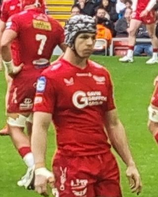
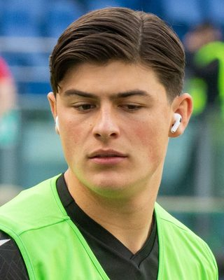
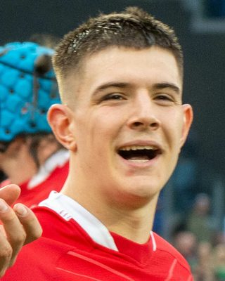
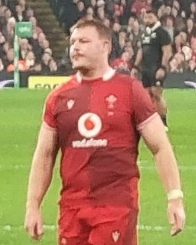
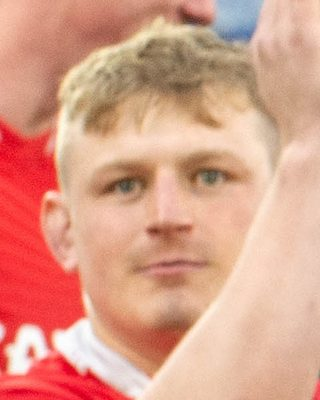
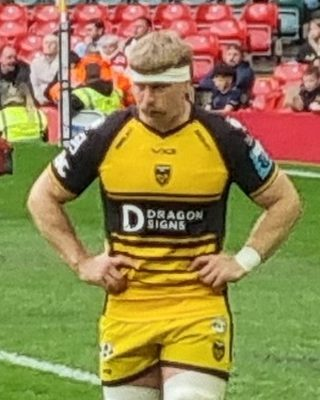

Live scores · Fixtures · Tables
Heights, weights and in-depth profiles of key Wales players for the 2026 World Rugby Nations Championship.
| Player | Height | Position |
|---|---|---|
| Louis Rees-Zammit | 1.91m 6ft 3in | Wing |
| Jac Morgan | 1.80m 5ft 11in | Flanker |
| Dafydd Jenkins | 2.01m 6ft 7in | Lock |
| Blair Murray | 1.73m 5ft 8in | Full-back / Wing |
| Aaron Wainwright | 1.89m 6ft 2in | Number 8 |
| Dan Edwards | 1.78m 5ft 10in | Fly-half |
| Dewi Lake | 1.85m 6ft 1in | Hooker |
Heights from official WRU, club, Six Nations and British & Irish Lions player profiles. Updated 17 October 2026.

Tom Rogers has emerged as one of the most exciting wings in Welsh rugby, combining explosive pace with a clinical finishing ability that has seen him become a genuine match-winner at both regional and international level. Born in West Wales, Rogers came through the Scarlets academy after starting his rugby journey at Cefneithin RFC and Tumble RFC.
Rogers made his senior debut for the Scarlets in November 2017 against Exeter in the Anglo-Welsh Cup. After gaining experience on the World Rugby Sevens Series circuit, he returned to XVs rugby and has gone on to make over 80 appearances for the Scarlets, scoring more than 19 tries. His reliability was underscored by a contract extension signed in February 2024 securing his commitment to the region.
Rogers made his Wales senior debut in July 2021 and has become an increasingly important figure in the national setup. His 2025 Six Nations campaign saw him start against France and Italy and score his first international try against Ireland. The highlight of his international career to date came in November 2025 when he became the first player from the northern hemisphere — and only the fourth in international history — to score a hat-trick against New Zealand, a stunning individual achievement that announced him on the world stage.
Rogers was named in Steve Tandy's squad for the 2026 Six Nations and is a key part of Wales's plans for the Nations Championship. At 27, he is in the prime years of his career and one of the most dangerous finishers in Welsh rugby.
Photo: Bearas, CC BY-SA 4.0, via Wikimedia Commons (cropped).

Louis Rees-Zammit is the biggest draw in Welsh rugby: a wing with genuine sprinter's pace and a story unlike any other player in the game. Born in Penarth on 2 February 2001, he went to The Cathedral School, Llandaff, played his youth rugby at Rhymney and Llandaff, and came through the Cardiff academy before moving to Hartpury College and Gloucester.
In 2019 he became Gloucester's youngest ever Premiership player, aged just 18, and scored a hat-trick in his breakthrough season. He won his first Wales cap away to France in October 2020 and scored his first Test try against Georgia in the Autumn Nations Cup. In 2021 he toured South Africa with the British & Irish Lions, scoring three tries in four appearances, including one just three minutes into his Lions debut.
In January 2024 he stunned Welsh rugby by leaving the game to chase his dream of playing in the NFL through the International Player Pathway programme. He ran 4.43 seconds for the 40-yard dash at a pro day in Florida and signed for the Kansas City Chiefs in March 2024, playing in all three of their pre-season games as a running back and kick returner. When the Chiefs let him go in August 2024, the Jacksonville Jaguars signed him straight away and moved him to wide receiver. He spent the 2024 season on their practice squad and was signed again in February 2025, before announcing that summer that it was time to come home to rugby.
Rees-Zammit joined Bristol Bears in August 2025 and was straight back in the Wales squad under Steve Tandy that autumn, coming off the bench against Argentina before starting against Japan. He played at full-back in the 31-17 win over Italy that ended Wales' long losing run in the 2026 Six Nations, and he heads into the autumn Tests as the player every Welsh fan wants to see with the ball in hand.
Photo: stede64 (Stefano Delfrate), CC BY-SA 2.0, via Wikimedia Commons (cropped).

Joe Hawkins is one of the most naturally talented young centres in Welsh rugby — a player who combines physical power with a footballing intelligence that belies his years. Born in Ystalyfera and raised in the Swansea Valley, Hawkins grew up playing his youth rugby at Pontardawe RFC before progressing through the Ospreys academy system.
Hawkins made his professional debut for the Ospreys in Round 4 of the 2020-21 Pro14 against Zebre at just 18 years old. He is equally capable at inside centre and outside half — a versatility that makes him a uniquely valuable option for both club and country. Hawkins represented Wales at the 2020 Six Nations Under 20s Championship at just 17, later captaining the U20 side. Rugby runs in the family — his grandfather Brian represented Wales Youth in 1970.
Hawkins made his senior Wales debut against Australia in November 2022, becoming one of the youngest centres to represent the national side in recent years. After a spell at Exeter Chiefs in the Premiership, he returned to Wales by signing for the Scarlets in March 2025 — a move that immediately restored his eligibility for national selection. He featured prominently in the 2026 Six Nations under Steve Tandy and is a central part of Wales's midfield options for the Nations Championship.
Photo: stede64 (Stefano Delfrate), CC BY-SA 2.0, via Wikimedia Commons (cropped).
Dan Edwards is Welsh rugby's most exciting young fly-half in a generation — a player who combines a running game of real threat with the composure and kicking game to manage a match at the highest level. Born in Port Talbot and raised near Cwmavon RFC, Edwards came through the Ospreys system and has rapidly established himself as the number one choice at 10 for Wales.
Edwards's rise through the Ospreys has been rapid. He benefited enormously from working alongside former Wales fly-half James Hook, now part of the Ospreys coaching staff, who helped develop the range and precision of his kicking game. His attacking ability — particularly his pace in broken field and ability to create from nothing — marked him out during the 2024-25 season as a genuine talent.
Edwards made his senior Wales debut against France in the opening game of the 2025 Six Nations, coming off the bench. He earned his first start against Japan in July 2025 on the summer tour, marking the occasion with a 16-point haul including a try that helped end Wales's long losing run. He started games in the 2026 Six Nations against England, France and Ireland — wearing a jersey that has been carried by Barry John, Phil Bennett, Jonathan Davies and Dan Biggar before him. Edwards takes enormous pride in that legacy and is determined to do it justice heading into the Nations Championship.

Dewi Lake is the captain of Wales and one of the most respected hookers in the United Rugby Championship. Born in Bridgend on 16 May 1999, Lake is a fluent Welsh speaker who has come to embody the values and character that Welsh rugby holds most dear — competitiveness, physicality, and an uncompromising commitment to the jersey.
Lake's journey to becoming Wales captain is an unusual one. He originally joined the Ospreys academy as a back row forward before being converted to hooker — a transition that, given his athleticism and carrying ability, proved to be an inspired decision. Before focusing on rugby, he also represented Wales as a schoolboy gymnast. He made his Ospreys debut in 2018 and has gone on to become the cornerstone of their set piece.
Lake made his senior Wales debut against Ireland in the 2022 Six Nations and quickly established himself as a key figure in the national squad. He captained the Wales Under-20 side at the 2019 World Rugby U20 Championship, leading them to a famous 8-7 victory over New Zealand — only the second under-20 victory over the age-grade All Blacks. He was named Wales captain for the 2026 Six Nations by head coach Steve Tandy and led the side across all five matches. At the Nations Championship, with Fiji, Argentina and South Africa on the horizon, Lake's leadership and set-piece excellence will be essential.
Note: Lake has signed for Gloucester ahead of the 2026-27 season following uncertainty over the future of the Ospreys region.
Photo: Bearas, CC BY-SA 4.0, via Wikimedia Commons (cropped).
Ben Carter is one of the most imposing locks in Welsh rugby — a towering second row of nearly 6ft 6in who combines physical dominance with a level of mobility and skill that makes him a genuine presence across all facets of the game. Born on 23 January 2001, Carter has already captained Wales at Under 18 and Under 19 level and was compared to Alun Wyn Jones by Wales coach Wayne Pivac when he first broke into the senior squad.
Carter made his Dragons debut in Round 4 of the 2020-21 Pro14 against Munster and has been one of the most consistent performers at Rodney Parade ever since. He was named Dragons co-captain for both the 2024-25 and 2025-26 seasons — a mark of the respect he commands within the squad. By the end of the 2022-23 season, at just 22 years old, he had made 48 appearances for his home region and was named the club's Young Player of the Season.
Carter made his senior Wales debut in the 68-12 win over Canada in the 2021 summer internationals, being named man of the match on his debut — an astonishing start to his international career. He has since been a regular in the Wales squad, earning three starts in the 2026 Six Nations including the victory over Italy. He was named in the Wales squad to tour Japan in the summer of 2025. At 25 and standing at 197cm, Carter is set to be a cornerstone of the Wales pack for years to come.

Jac Morgan is one of the best back-rowers Wales has produced in years, a flanker famous for his work at the breakdown and his relentless energy. Born on 21 January 2000 in Sketty, Swansea, he grew up in Brynamman and first played his rugby at Cwmtwrch RFC.
Morgan's route to the top was not a straight line. He spent two years working as an apprentice mechanical engineer before getting his chance in professional rugby. He played for Aberavon in the semi-professional game, came through at the Scarlets, and joined the Ospreys in 2021. He moved to Gloucester ahead of the 2026-27 season.
Morgan made his Wales debut in 2022 and has captained his country. In 2025 he toured Australia with the British & Irish Lions, coming off the bench in the second and third Tests and scoring a try in the final Test in Sydney. He can play at openside, blindside and number 8, and he is one of the first names Wales fans want to see on the team sheet.
Photo: stede64 (Stefano Delfrate), CC BY-SA 2.0, via Wikimedia Commons (cropped).

Aaron Wainwright is one of the most experienced and important players in the current Wales squad — a Number 8 of genuine international quality who has represented his country over 62 times and remains one of the most dangerous ball-carriers in the northern hemisphere. Born in Newport on 25 September 1997, Wainwright's path to rugby was far from straightforward.
As a teenager, Wainwright was talented enough at football to be on the books of Cardiff City from Under 9 to Under 16 level and was included in the Wales Under 16 football squad. It was only when rugby took over that his extraordinary athletic gifts found their true home. He made his Dragons debut in 2017 after playing for Newport RFC and by May 2019 had won the Coaches', Players' and Supporters' Player of the Year awards at the region in the same season — a clean sweep that underlined his rapid rise.
Wainwright scored a try in Wales's dramatic 20-19 victory over France in the 2019 Rugby World Cup quarter-final at Oita Stadium — one of the defining moments of Welsh rugby in recent years. He was named Mastercard Player of the Match. He went on to contribute to Wales's 2021 Six Nations title and has been a first-choice Number 8 under multiple head coaches.
In the 2026 Six Nations, Wainwright started all five matches and made 48 carries across the tournament — bettered only by England's Ben Earl among all players. His power across the gainline and exceptional work rate without the ball remain the foundations of his game. He has signed for Leicester Tigers ahead of the 2026-27 season but, with over 62 caps, comfortably exceeds the 25-cap threshold to remain eligible for Wales while playing outside the country.
Wainwright was named the Welsh Rugby Writers' Association Wales Men's Player of the Year for 2023-24 and has twice been voted Dragons Players' Player of the Year. He enters the Nations Championship as one of Wales's most crucial players.
Photo: Bearas, CC BY-SA 4.0, via Wikimedia Commons (cropped).